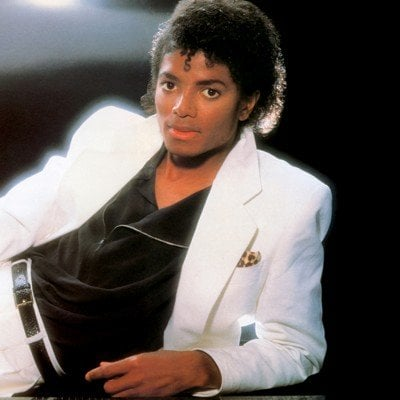

CUIDA MICHAEL JACKSON

Foi o maior cantor pop da história
Michael Jackson (1958–2009) foi um lendário cantor, compositor, dançarino
e filantropo americano, amplamente reconhecido como o "Rei do Pop" e uma
as figuras culturais mais importantes do século XX.
Ele revolucionou a música, dança e videoclipes, lançando o álbum mais vendido
da história, Thriller (1982).

Interagindo com o Rei do Pop

O que fazer quando chegar perto dele?
- Abraçar
Rotina do Laboratório
O que fazer quando chegar no laboratório?
- Dormir
- Acordar
- Estudar